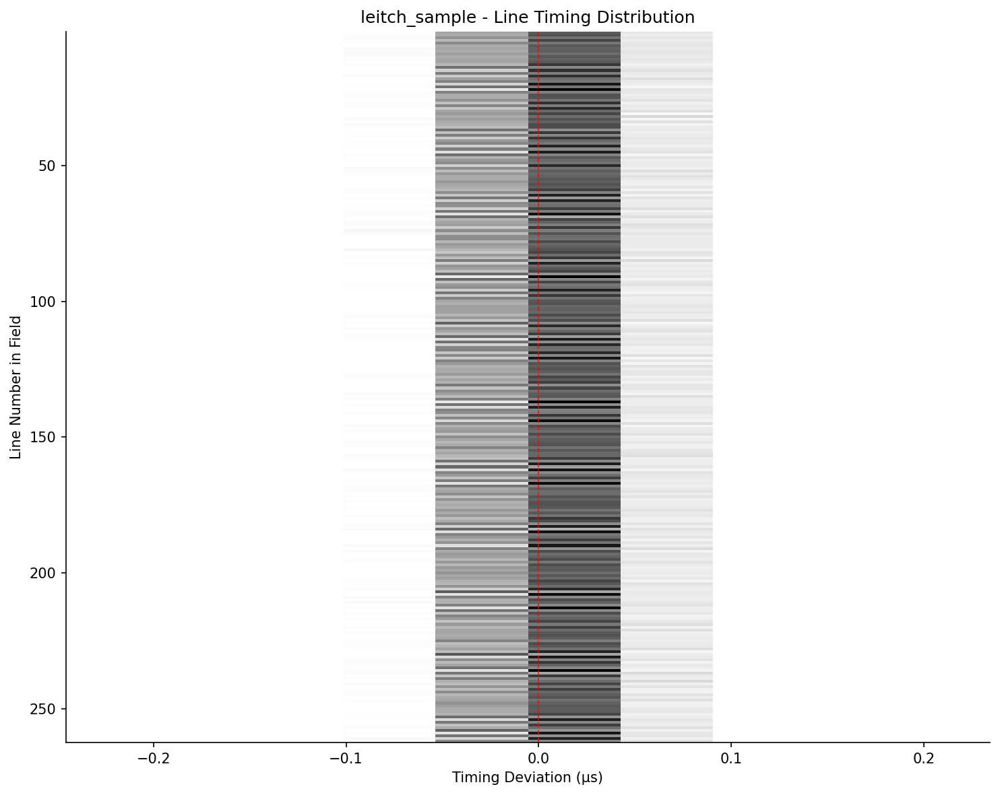

NTSC nominal line period: 63.5556 µs (15734.264 Hz)
| Metric | Leitch Generator | Red Pitaya | NTSC Nominal |
|---|---|---|---|
| Median | 63.5500 µs | 63.5500 µs | 63.5556 µs |
| Mean | 63.5555 µs | 63.5562 µs | — |
| Std Dev | 16.72 ns | 87.35 ns | — |
| RMS Jitter | 17.58 ns | 87.57 ns | — |
| Peak-to-Peak Jitter | 100.00 ns | 8000.00 ns | — |
| Min | 63.5000 µs | 63.5000 µs | — |
| Max | 63.6000 µs | 71.5000 µs | — |
| 1st Percentile | 63.5500 µs | 63.5000 µs | — |
| 5th Percentile | 63.5500 µs | 63.5500 µs | — |
| 25th Percentile | 63.5500 µs | 63.5500 µs | — |
| 75th Percentile | 63.5500 µs | 63.5500 µs | — |
| 95th Percentile | 63.6000 µs | 63.6000 µs | — |
| 99th Percentile | 63.6000 µs | 63.6000 µs | — |
| Sample Count | 17,587 | 17,587 | — |
Each row shows the timing distribution for that line number within a field. The thin gray line shows full range (min-max), blue shows 5th-95th percentile, thick blue shows interquartile range (25th-75th), and the dot marks the median. The red dashed line indicates zero deviation from nominal.
NTSC nominal field period: 16.6834 ms (59.94 Hz)
| Metric | Leitch Generator | Red Pitaya | NTSC Nominal |
|---|---|---|---|
| Median | 16.6833 ms | 16.6833 ms | 16.6834 ms |
| Mean | 16.6833 ms | 16.6835 ms | — |
| Std Dev | 0.02 µs | 1.35 µs | — |
| RMS Jitter | 0.02 µs | 1.37 µs | — |
| Peak-to-Peak Jitter | 0.05 µs | 7.95 µs | — |
| Min | 16.6833 ms | 16.6832 ms | — |
| Max | 16.6834 ms | 16.6912 ms | — |
| 1st Percentile | 16.6833 ms | 16.6832 ms | — |
| 5th Percentile | 16.6833 ms | 16.6832 ms | — |
| 25th Percentile | 16.6833 ms | 16.6833 ms | — |
| 75th Percentile | 16.6833 ms | 16.6833 ms | — |
| 95th Percentile | 16.6833 ms | 16.6833 ms | — |
| 99th Percentile | 16.6834 ms | 16.6912 ms | — |
| Sample Count | 67 | 67 | — |
NTSC nominal: 262.5 lines per field (alternating 262 and 263)
| Metric | Leitch Generator | Red Pitaya |
|---|---|---|
| Mean Lines/Field | 262.49 | 262.49 |
| Min | 262 | 262 |
| Max | 263 | 263 |
Logic analyzer sample rate: 20.0 MS/s
| Parameter | Value | Notes |
|---|---|---|
| Sample Period | 50.0 ns | Minimum time resolution between edges |
| Timing Uncertainty (1σ) | ±25.0 ns | Each edge can be off by ±½ sample period |
| Period Uncertainty (1σ) | ±35.4 ns | Two edges: √2 × single edge uncertainty |
| Quantization Noise Floor | 14.4 ns RMS | Uniform distribution: σ = Δt/√12 |
Jitter values below ~100 ns may be dominated by measurement quantization rather than actual source jitter.
Methodology Notes:
Generated by generate_timing_report.py